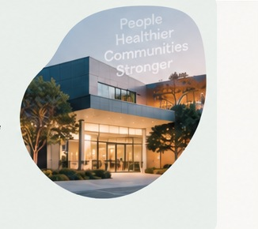

For Doctors
Your career.
Your network.
Join the network whether you’re actively looking or simply open to hearing about the right opportunity.
The Doctor Network connects doctors with permanent and selected locum opportunities across Australia’s private and public healthcare system.
Whether you’re exploring your next move or looking for the right doctor for your organisation, it starts with a conversation.
Join the network whether you’re actively looking or simply open to hearing about the right opportunity.
We help healthcare organisations identify and engage high-quality doctors for permanent and selected locum positions.

After more than a decade across recruitment agencies, the same challenge kept appearing: systems, processes and speed to market.
The Doctor Network combines real recruitment experience with software developed to bridge that gap — reducing friction behind the scenes so more time can go into the conversations that actually matter.
Cleaner workflows and fewer unnecessary hand-offs.
Move from brief to search, outreach and conversation sooner.
Clearer actions and a more connected recruitment process.
Technology supports the recruiter. Relationships remain the point.
After more than a decade across recruitment agencies, the same friction kept showing up: disconnected tools, duplicated admin, slow hand-offs and too much time between finding the right doctor and starting the right conversation.
The software behind The Doctor Network has been developed to bridge that gap. It connects the workflow behind search, outreach and recruitment so the process can move faster without becoming less personal.